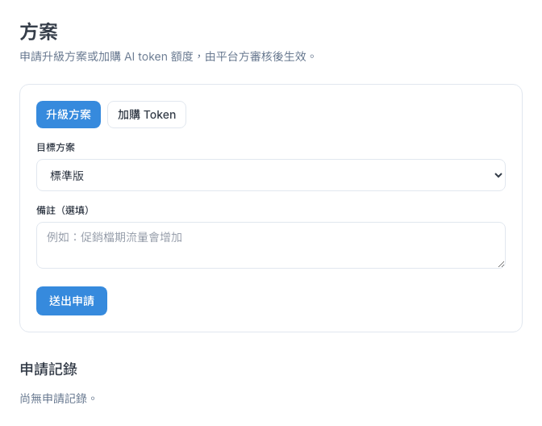
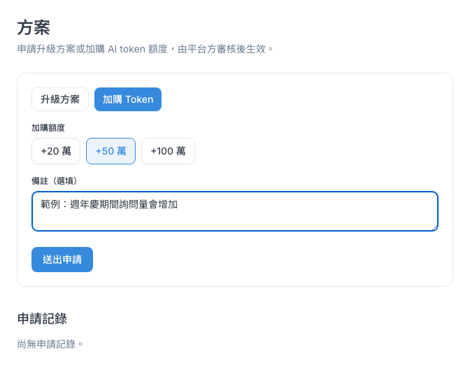
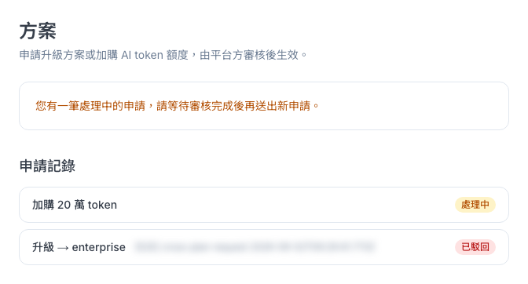

CHAPTER 14 · 分析與管理
方案與帳務
需要更大的方案或更多 AI 額度時，在這裡送出申請，平台方審核通過後生效。
1 這頁能做什麼
「方案／帳務」讓管理員向平台方提出兩種申請：升級方案，或加購 AI 額度（Token）。送出後由平台方審核，核准後才會生效，你可以在同一頁看申請進度。
從左側選單「分析與管理 → 方案／帳務」進入，頁面標題是「方案」。這頁只有具備「系統設定」權限的管理員看得到。
ℹ️
這頁不會顯示目前的方案和用量，只能提出申請。送出升級前，請先向公司窗口或平台方確認你們現在是哪個方案，避免申請到同級或更低的方案。
2 升級方案
需要更多功能或更大的使用量時，申請換成更大的方案。各方案的內容與價格請洽平台方。
- 按「升級方案」。
- 在「目標方案」選「標準版」「專業版」或「企業版」。
- 需要的話在「備註（選填）」寫原因或希望生效的時間，例如「下個月起新增兩個門市帳號」。
- 確認無誤後按「送出申請」。
- 上方出現「申請已送出，等待平台方核准」，下方「申請記錄」會多一筆「處理中」。

3 加購 Token
Token 是 AI 的使用額度：AI 客服每回答一次、每產生一次建議回覆或摘要，都會用掉一些。遇到活動檔期、詢問量變多，額度快用完時可以加購。
- 按「加購 Token」。
- 在「加購額度」選「+20 萬」「+50 萬」或「+100 萬」。
- 在「備註（選填）」寫原因，例如「週年慶期間詢問量會增加」。
- 按「送出申請」，等平台方核准。

⚠️
- 同一時間只能有一筆處理中的申請。送出後要等平台方審核完，才能再送下一筆，所以送出前請確認方案或額度選對了。
- 備註最多 500 字。目前輸入時不會提醒字數，太長會在送出時失敗。
- 送出失敗的訊息目前也是綠色底，請看文字內容判斷，不要看顏色。
4 申請記錄
頁面下方「申請記錄」列出所有申請和結果。

| 狀態 | 意思 |
|---|---|
| 處理中 | 平台方還在審核。這段期間表單會換成「您有一筆處理中的申請，請等待審核完成後再送出新申請。」 |
| 已核准 | 平台方同意了，方案或額度已經生效 |
| 已駁回 | 平台方沒有同意。頁面不會寫原因，請直接聯絡平台方詢問 |
升級申請在記錄裡會顯示英文方案代號，對照如下：standard＝標準版、professional＝專業版、enterprise＝企業版。記錄目前沒有顯示申請日期。
ℹ️
如果「申請記錄」顯示「尚無申請記錄。」但你記得送過申請，請重新整理頁面。目前讀取失敗時也會顯示這句話。